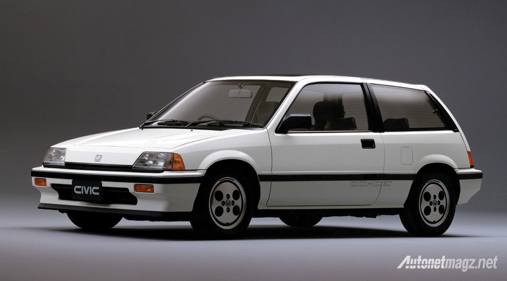

Honda
Siapa yang tidak mengenal Honda di era teknologi seperti sekarang ini? Merek mobil ini cukup terkenal, bahkan di beberapa daerah menjadi pengganti nama sepeda motor Honda. Jadi sepeda motor itu bukan disebut sepeda motor, melainkan Honda. Nah, selain sepeda motor, produk mobil Honda yang populer lainnya adalah mobil. Popularitas mobil Honda meledak karena Honda berhasil menawarkan produk yang ramah lingkungan dan irit. Kunci untuk membeli mobil adalah keuangan. Kalau tidak irit rugi dua kali, beli mahal, beli bensin juga mahal.
Berbicara tentang Honda, apakah teman-teman Car Sentral mengetahui sejarah Honda hingga akhirnya merek mobil tersebut berhasil merajai pasar Indonesia? Kalau belum tahu, yuk kita pelajari sejarahnya dulu.

Sejarah Honda
Di Jepang, Honda Motor Company, Ltd. Dalam bahasa Jepang disebut Hondasi Giken Kogyo Kabushiki-gaisha atau Hondasi Technology Research Institute Company. Sejak awal, Honda telah menampilkan dirinya sebagai perusahaan otomotif yang hanya memproduksi peralatan otomotif. Jadi, selain sepeda motor dan mobil, perusahaan ini juga memproduksi truk, skuter, generator listrik, dan mesin kelautan.
Perusahaan ini didirikan oleh Soichiro Honda dan Takeo Fujisawa. Kontribusi perusahaan ini terhadap dunia otomotif memang tak terbantahkan. Sejak awal, mereka berhasil muncul sebagai merek pemenang. Pada tahun 1959, Honda berhasil menduduki posisi sebagai produsen sepeda motor terbesar di dunia. Pencapaian ini diikuti dengan menjadi produsen mesin pembakaran dalam terbesar di dunia. Kemudian, pada tahun 2001, Honda mampu menempati posisi kedua sebagai produsen mobil terbesar di Jepang. Honda selalu bergerak maju dan menawarkan banyak keuntungan bagi pelanggannya.
Awalnya, Honda hanya memproduksi sepeda motor. Butuh beberapa waktu sebelum Honda ingin memproduksi merek mobilnya sendiri. Produksi pertama mobil ini dimulai pada tahun 1972 di Jepang. Kehadiran Honda di industri otomotif relatif baru dibandingkan dengan pabrikan mobil Jepang lainnya. Situasi ini menjadi tumpuan Honda untuk menciptakan mobil baru yang konsepnya belum pernah ada sebelumnya. Karena itulah produk mobil Honda selalu mengutamakan sistem penggerak. Dua produk utama Honda yang tumbuh dan bertahan karena keputusan inovatif ini adalah Honda Accord dan Honda Civic.
Produk mobil Honda pertama kali diproduksi massal setelah berakhirnya Perang Dunia II. Mobil penumpang pertama yang diproduksi perusahaan ini adalah Honda S500 di Japan National Auto Show tahun 1962. Honda pertama kali hadir di Indonesia pada tahun 1960. dengan tujuan menghilangkan produk Amerika dan Eropa dari pasar mobil Indonesia. Tiga tahun setelah Honda memasuki pasar Indonesia, Honda meluncurkan produk mobilnya sendiri. Perjalanan Honda sebagai produsen mobil di Indonesia mulai membaik setelah Civic lahir. Salah satu seri mobil Honda yang berhasil menarik perhatian banyak orang.
Sebelum mendirikan PT di Indonesia, Honda meluncurkan dua produk mobilnya pada tahun 1963 dan 1972. Dua tahun setelah itu, pada tahun 1974, Honda mendirikan PT. Honda Prospect Motor dan menjadi satu-satunya perwakilan dan pemilik tunggal label Honda di Indonesia. Setelah itu, perjalanan Honda dimulai di Indonesia dan mereka mulai beradaptasi dengan selera pasar Indonesia. Misi Honda untuk menyingkirkan produk mobil Amerika dan Eropa telah tercapai. Honda terus menjadi salah satu penguasa pasar mobil Indonesia dan terus menghasilkan produk mobil yang inovatif dan handal.
Pada tahun 1963, Honda menghadirkan mobil pertama Honda T360. Kotak dan pikap yang multifungsi dan cocok untuk kondisi alam Indonesia. Mobil ini memenuhi misi pertamanya sebagai penguasa pasar mobil Indonesia. Kemudian pada tahun 1972, Honda menawarkan mobil dengan desain dan konsep baru yang diberi nama Honda Civic. Mobil ini cukup populer dan banyak orang di masanya. Versi Honda Civic yang pertama kali ditawarkan di pasar Indonesia adalah Civic Coupe 2 pintu. Beberapa bulan kemudian, Honda merilis minivan Civic.
Rekor produksi mobil Honda di Indonesia terbilang lambat, terutama sejak Honda mendirikan PT pertamanya di Indonesia. Di waktu senggang itu saya tidak tahu apa yang dilakukan Honda, hingga akhirnya pada tahun 2003 muncul Honda Jazz 5 pintu. Berkat berbagai inovasi dan tampilan yang modern, Honda selalu tampil baru dan tetap up to date. Semua produk yang ditawarkan oleh Honda pada akhirnya diakui dan dipercaya.

Saat ini ada dua pabrik mobil Honda yang resmi berdiri di Indonesia. Pabrik yang diberi nama PT Honda Prospect Motor ini berlokasi di Kawasan Industri Karawang, Jawa Barat. Pabrik kedua mereka dibuka pada tahun 2014 di lokasi yang sama dan bersebelahan dengan pabrik pertama. Jadi Honda saat ini memiliki dua pabrik dan keduanya berlokasi di Karawang. Berdirinya pabrik kedua ini menunjukkan bahwa produk Honda adalah salah satu yang paling digandrungi masyarakat Indonesia. Perwakilan Honda juga mengakui bahwa Indonesia merupakan pasar yang penting bagi perkembangan Honda, sehingga mereka melakukan ekspansi bisnis dengan harapan dapat memberikan yang terbaik kepada konsumen.
Kapasitas produksi mobil Honda di Indonesia meningkat pada tahun 2017. Tiga tahun setelah memulai pabrik kedua, Honda mampu mencapai kapasitas produksi hingga 100.000 unit pada tahun 2017. Ini merupakan pencapaian besar bagi karir Honda di Indonesia. Kemudian pada tahun 2018, peningkatan tersebut terulang kembali. Kapasitas produksinya 20 ribu unit. Sayangnya, pencapaian tersebut harus diubah sementara pada 2020. Akibat pandemi, Honda sempat menghentikan proses produksi PT-nya. Fakta bahwa Honda adalah merek mobil besar tidak bisa diabaikan. Namun perjalanan mereka tidak seindah bahan-bahan sejarah. Honda mengalami banyak pasang surut hingga akhirnya berhasil menguasai pasar mobil internasional.
| Kelebihan | Kekurangan |
|---|---|
| Terkesan mobil anak muda | Spare part mahal |
| Desain sporty | Harga mahal |
| Menonjolkan kecepatan | Body ceper tidak cocok untuk semua daerah di Indonesia |
| Spare part dan dealer banyak dan mudah dicari | Kekedapan kabin kurang |
| Harga jual kembali cukup bagus | Tidak banyak pilihan produk |
| Canggih dan fitur terkini |